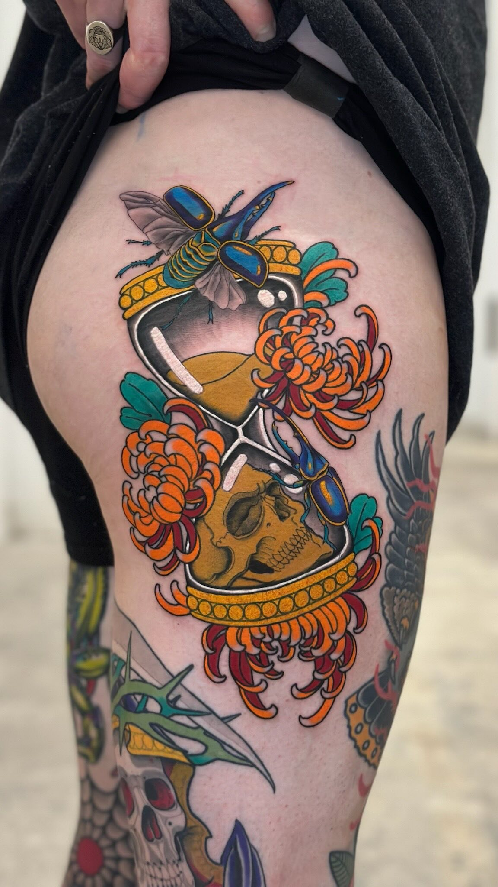

Pieza pequeña
Detalles, lettering o piezas compactas. Ideal para primera sesión.
Desde 80€Cada sesión incluye diseño personalizado, material de un solo uso y una guía de cuidados post-tatuaje.
Detalles, lettering o piezas compactas. Ideal para primera sesión.
Desde 80€
Composiciones con más peso visual. Diseño a medida incluido.
Desde 220€
Proyectos por sesiones. Planificamos flujo, anatomía y continuidad.
100€/h · por sesión